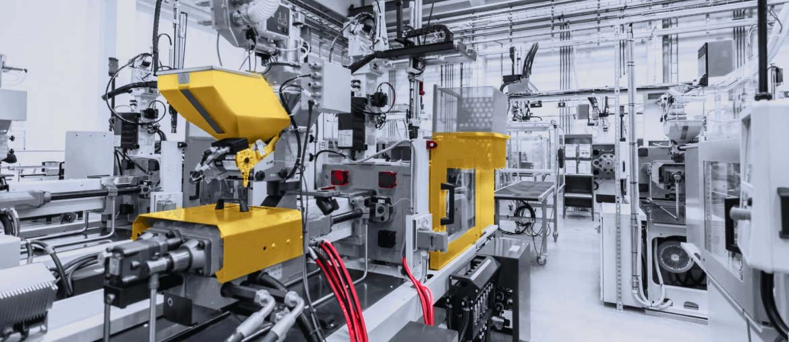

1
Map the release path
Trace device, app, CareNet EVO, CRM, supplier, and support handoffs for one planned product change.
For Carl Atkey and Appello
Saw Appello is hiring a Technical Project Manager for product and manufacturing. That points to a real push across devices, software, suppliers, and live service readiness.
We would help the team keep delivery moving while the new TPM role is filled and ramped.
The TPM role says Appello is scaling product delivery, not just adding process. Smart Living Solutions, SmartBridge, CareNet EVO, AppelloHQ, and AppelloSBR all sit across hardware, software, suppliers, and support. The hard part is keeping releases clear, tested, and ready for live careline use. If that slows down, switchover work stalls and the core team carries too much risk.
Use a dedicated squad under Appello's Product or PM lead for a six-week pilot.
Trace device, app, CareNet EVO, CRM, supplier, and support handoffs for one planned product change.
Harden APIs and data flows between alarm events, AppelloHQ, AppelloSBR, contact centre tools, and reporting.
Create tests for alarm activation, call routing, fallback paths, operator screens, and customer data updates.
Package release notes, support scripts, acceptance checks, and weekly demos for Appello's internal teams before launch.
Elinext is a full-cycle software development company, active since 1997, with about 700 in-house specialists and no freelancers. For Appello, the fit is stable delivery, senior engineers, ISO 9001 quality practice, and ISO 27001 security practice. We also bring long corporate delivery experience for customers such as Siemens, Broadcom, Volkswagen, TRUMPF, and TUI. That means Appello can add capacity without changing how its own product team leads the work.

Elinext helped move a healthcare monitoring product from manual work to live online data and stronger bridge performance.
View case study
Elinext supported a long-running MES product with release teams, integrations, support, and modernization work.
View case studyPick one product release and test the squad fit.
Start the conversation